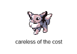

Evan Kuvshinoff's Projects
- Designed a fully functional robot assistant with real-time speech interaction and intelligent behavior.
- Integrated edge-based facial recognition for responsive interaction, using dynamic servo control and camera tracking to maintain realistic eye contact.
- Developed a conversational system using speech-to-text and the OpenAI API to enable natural language understanding and contextual responses.
- Engineered Bluetooth telemetry modules for real-time data reporting via prompts.

- smart plant pot
- measures soil moisture content and displays to an oled display
- sends measurements over bluetooth on request
- wireless temp/humidity measurement station
- measures temp/humidity and sends to clarity over bluetooth on request
- Designed and built custom IoT devices using Raspberry Pi Pico W to receive real-time alerts.
- Developed a lightweight, socket-based network protocol that enables reliable communication between devices via a cloud-hosted Azure server.
- Integrated a bot using the Discord API to trigger device responses from remote users via chat commands.